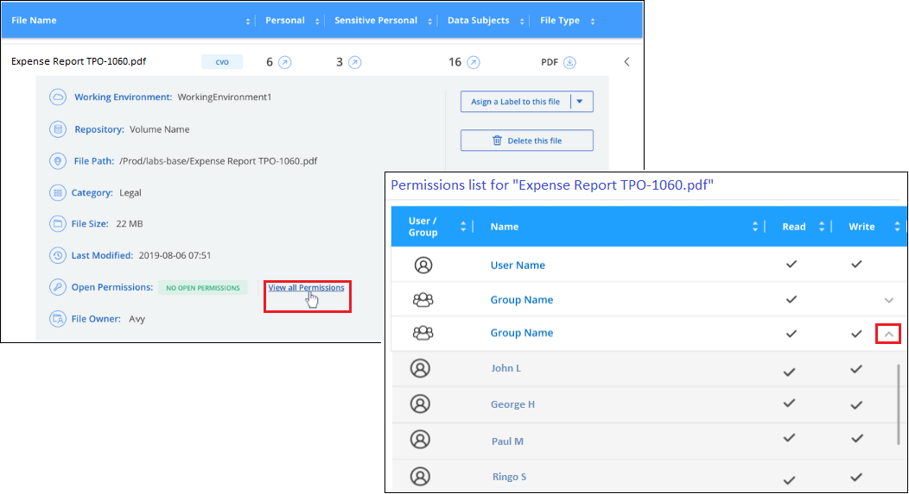

Notes de mise à jour
Notes de mise à jour
Examinez les données stockées dans votre organisation
 Suggérer des modifications
Suggérer des modifications
Vous pouvez examiner les données de votre organisation en affichant les détails dans la page recherche de données. Vous pouvez naviguer jusqu'à cette page à partir de plusieurs sections de l'interface de classification BlueXP, y compris les tableaux de bord gouvernance et conformité.

|
Les fonctionnalités décrites dans cette section ne sont disponibles que si vous avez choisi d'effectuer une analyse de classification complète sur vos sources de données. Les sources de données qui ont une analyse avec mappage uniquement n'affichent pas de détails au niveau des fichiers. |
Filtrez les données dans la page Data Investigation
Vous pouvez filtrer le contenu de la page d'enquête pour n'afficher que les résultats que vous souhaitez voir. Il s'agit d'une fonctionnalité très puissante car une fois les données raffinées, vous pouvez utiliser la barre de boutons en haut de la page pour effectuer diverses actions, notamment copier des fichiers, déplacer des fichiers, ajouter une balise ou une étiquette AIP aux fichiers, et bien plus encore.
Si vous souhaitez télécharger le contenu de la page en tant que rapport après l'avoir affiné, cliquez sur le bouton  bouton. Cliquez ici pour plus de détails sur le rapport d'enquête sur les données.
bouton. Cliquez ici pour plus de détails sur le rapport d'enquête sur les données.

-
Les onglets de niveau supérieur vous permettent d'afficher les données issues de fichiers (données non structurées), de répertoires (dossiers et partages de fichiers) ou de bases de données (données structurées).
-
Les commandes situées en haut de chaque colonne vous permettent de trier les résultats par ordre numérique ou alphabétique.
-
Les filtres du volet gauche vous permettent d'affiner les résultats en sélectionnant les attributs décrits dans les sections suivantes.
Filtrer les données par sensibilité et par contenu
Utilisez les filtres suivants pour afficher la quantité d'informations sensibles contenues dans vos données.
| Filtre | Détails |
|---|---|
Catégorie |
Sélectionner "types de catégories". |
Niveau de sensibilité |
Sélectionnez le niveau de sensibilité : personnel, personnel sensible ou non sensible. |
Nombre d'identificateurs |
Sélectionnez la plage d'identificateurs sensibles détectés par fichier. Inclut des données personnelles et des données personnelles sensibles. Lors du filtrage dans les répertoires, la classification BlueXP totalise les correspondances de tous les fichiers de chaque dossier (et sous-dossiers). |
Données personnelles |
Sélectionner "types de données personnelles". |
Données personnelles sensibles |
Sélectionner "types de données personnelles sensibles". |
Sujet de données |
Saisissez le nom complet ou l'identifiant connu d'un sujet de données. "Pour en savoir plus sur les sujets de données, cliquez ici". |
Filtrez les données par propriétaire d'utilisateur et par autorisation utilisateur
Utilisez les filtres suivants pour afficher les propriétaires de fichiers et les autorisations d'accès à vos données.
| Filtre | Détails |
|---|---|
Ouvrez autorisations |
Sélectionnez le type d'autorisations dans les données et dans les dossiers/partages. |
Autorisations utilisateur/groupe |
Sélectionnez un ou plusieurs noms d'utilisateur et/ou de groupe ou entrez un nom partiel. |
Propriétaire du fichier |
Entrez le nom du propriétaire du fichier. |
Nombre d'utilisateurs ayant accès |
Sélectionnez une ou plusieurs plages de catégories pour afficher les fichiers et dossiers ouverts à un certain nombre d'utilisateurs. |
Filtrez les données par heure
Utilisez les filtres suivants pour afficher les données en fonction des critères de temps.
| Filtre | Détails |
|---|---|
Heure de création |
Sélectionnez une plage horaire au moment de la création du fichier. Vous pouvez également spécifier une plage horaire personnalisée pour affiner davantage les résultats de la recherche. |
Heure découverte |
Sélectionnez une plage horaire lorsque la classification BlueXP a détecté le fichier. Vous pouvez également spécifier une plage horaire personnalisée pour affiner davantage les résultats de la recherche. |
Dernière modification |
Sélectionnez une plage horaire pour la dernière modification du fichier. Vous pouvez également spécifier une plage horaire personnalisée pour affiner davantage les résultats de la recherche. |
Dernier accès |
Sélectionnez une plage horaire lors du dernier accès au fichier ou au répertoire (CIFS ou NFS uniquement). Vous pouvez également spécifier une plage horaire personnalisée pour affiner davantage les résultats de la recherche. Pour les types de fichiers analysés par le système de classification BlueXP, il s'agit de la dernière fois que le fichier a été analysé par le système de classification BlueXP. La classification BlueXP n'extrait pas l'heure du dernier accès des sources de données suivantes : SharePoint Online, SharePoint on-pretlocale (SharePoint Server), OneDrive, Google Drive et Amazon S3. |
Filtrage des données par métadonnées
Utilisez les filtres suivants pour afficher les données en fonction de l'emplacement, de la taille et du répertoire ou du type de fichier.
| Filtre | Détails |
|---|---|
Chemin du fichier |
Saisissez jusqu'à 20 chemins partiels ou complets que vous souhaitez inclure ou exclure de la requête. Si vous entrez à la fois les chemins d'inclusion et d'exclusion, la classification BlueXP recherche d'abord tous les fichiers des chemins inclus, puis supprime les fichiers des chemins exclus, puis affiche les résultats. Notez que l'utilisation de "*" dans ce filtre n'a aucun effet et que vous ne pouvez pas exclure des dossiers spécifiques de l'analyse - tous les répertoires et fichiers d'un partage configuré seront analysés. |
Type de répertoire |
Sélectionnez le type de répertoire : « partager » ou « dossier ». |
Type de fichier |
Sélectionner "types de fichiers". |
Taille du fichier |
Sélectionnez la plage de tailles de fichier. |
Hachage de fichiers |
Entrez le hachage du fichier pour trouver un fichier spécifique, même si le nom est différent. |
Filtrer les données par type de stockage
Utilisez les filtres suivants pour afficher les données par type de stockage.
| Filtre | Détails |
|---|---|
Type d'environnement de travail |
Sélectionnez le type d'environnement de travail. OneDrive, SharePoint et Google Drive sont classés dans « applications ». |
Nom de l'environnement de travail |
Sélectionner des environnements de travail spécifiques. |
Référentiel de stockage |
Sélectionnez le référentiel de stockage, par exemple un volume ou un schéma. |
Filtrez les données par balises, étiquettes, utilisateurs affectés et règles
Utilisez les filtres suivants pour afficher les données par étiquettes ou étiquettes AIP.
| Filtre | Détails |
|---|---|
Stratégies |
Sélectionnez une ou plusieurs stratégies. Aller "ici" pour afficher la liste des règles existantes et créer vos propres règles personnalisées. |
Étiquette |
Sélectionnez "Libellés AIP" qui sont affectés à vos fichiers. |
Étiquettes |
Sélectionnez "la ou les balises" qui sont affectés à vos fichiers. |
Affecté à |
Sélectionnez le nom de la personne à laquelle le fichier est affecté. |
Filtrez les données par état d'analyse
Utilisez le filtre suivant pour afficher les données en fonction de l'état d'analyse de classification BlueXP.
| Filtre | Détails |
|---|---|
État de l'analyse |
Sélectionnez une option pour afficher la liste des fichiers en attente de première numérisation, terminés en cours de numérisation, en attente de numérisation ou qui n'ont pas pu être numérisés. |
Événement d'analyse d'acquisition |
Indiquez si vous souhaitez afficher les fichiers non classés car la classification BlueXP n'a pas pu rétablir l'heure du dernier accès ou les fichiers classés même si la classification BlueXP n'a pas pu rétablir l'heure du dernier accès. |
"Voir les détails sur l'horodatage de la « dernière heure d'accès »" Pour plus d'informations sur les éléments qui apparaissent dans la page Investigation lors du filtrage à l'aide de l'événement Scan Analysis.
Filtrer les données par doublons
Utilisez le filtre suivant pour afficher les fichiers qui sont dupliqués dans votre espace de stockage.
| Filtre | Détails |
|---|---|
Doublons |
Indiquez si le fichier est dupliqué dans les référentiels. |
Afficher les métadonnées de fichier
Dans le volet Résultats de l'enquête de données, vous pouvez cliquer sur  pour afficher les métadonnées de fichier, quel qu'il soit.
pour afficher les métadonnées de fichier, quel qu'il soit.

En plus de vous indiquer l'environnement de travail et le volume où se trouve le fichier, les métadonnées affichent beaucoup plus d'informations, notamment les autorisations de fichier, le propriétaire du fichier, s'il existe des doublons de ce fichier et l'étiquette AIP attribuée (si vous disposez de "AIP intégré dans la classification BlueXP"). Ces informations sont utiles si vous prévoyez de le faire "Créer des règles" car vous pouvez voir toutes les informations que vous pouvez utiliser pour filtrer vos données.
Notez que toutes les informations ne sont pas disponibles pour toutes les sources de données, ce qui est juste ce qui est approprié pour cette source de données. Par exemple, le nom du volume, les autorisations et les libellés AIP ne sont pas pertinents pour les fichiers de base de données.
Lors de l'affichage des détails d'un seul fichier, vous pouvez effectuer quelques actions sur le fichier :
-
Vous pouvez déplacer ou copier le fichier dans n'importe quel partage NFS. Voir "Déplacement des fichiers source vers un partage NFS" et "Copie des fichiers source vers un partage NFS" pour plus d'informations.
-
Vous pouvez supprimer le fichier. Voir "Suppression des fichiers source" pour plus d'informations.
-
Vous pouvez affecter un certain état au fichier. Voir "Application de balises" pour plus d'informations.
-
Vous pouvez affecter le fichier à un utilisateur BlueXP pour être responsable de toutes les actions de suivi qui doivent être effectuées sur le fichier. Voir "Affectation d'utilisateurs à un fichier" pour plus d'informations.
-
Si vous avez intégré des étiquettes d'AIP à la classification BlueXP, vous pouvez attribuer une étiquette à ce fichier ou modifier cette étiquette s'il en existe déjà une. Voir "Attribution manuelle d'étiquettes AIP" pour plus d'informations.
Afficher les autorisations pour les fichiers et les répertoires
Pour afficher la liste de tous les utilisateurs ou groupes qui ont accès à un fichier ou à un répertoire, ainsi que les types d'autorisations dont ils disposent, cliquez sur Afficher toutes les autorisations. Ce bouton est disponible uniquement pour les données des partages CIFS, SharePoint Online, SharePoint sur site et OneDrive.
Notez que si vous voyez des SID (identificateurs de sécurité) au lieu des noms d'utilisateur et de groupe, vous devez intégrer votre Active Directory dans la classification BlueXP. "Découvrez comment faire".

Vous pouvez cliquer sur  pour tous les groupes pour voir la liste des utilisateurs qui font partie du groupe.
pour tous les groupes pour voir la liste des utilisateurs qui font partie du groupe.
En outre, Vous pouvez cliquer sur le nom d'un utilisateur ou d'un groupe et la page Investigation s'affiche avec le nom de cet utilisateur ou groupe renseigné dans le filtre "autorisations utilisateur/groupe" pour que vous puissiez voir tous les fichiers et répertoires auxquels l'utilisateur ou le groupe a accès.
Vérifiez la présence de fichiers en double dans vos systèmes de stockage
Vous pouvez afficher si des fichiers dupliqués sont stockés dans vos systèmes de stockage. Cette fonction s'avère utile pour identifier les domaines dans lesquels vous pouvez économiser de l'espace de stockage. Il peut également être utile de s'assurer que certains fichiers possédant des autorisations spécifiques ou des informations sensibles ne sont pas inutilement dupliqués dans vos systèmes de stockage.
Tous vos fichiers (à l'exception des bases de données) de 1 Mo ou plus, contenant des informations personnelles ou sensibles, sont comparés pour voir s'il y a des doublons. Vous pouvez utiliser les filtres de la page Investigation « taille du fichier » ainsi que « doublons » pour voir quels fichiers d'une certaine plage de tailles sont dupliqués dans votre environnement.
La classification BlueXP utilise la technologie de hachage pour déterminer les fichiers en double. Si un fichier a le même code de hachage qu'un autre fichier, nous pouvons être 100 % sûrs que les fichiers sont des doublons exacts, même si les noms de fichier sont différents.
Vous pouvez télécharger la liste des fichiers dupliqués et les envoyer à votre administrateur de stockage afin qu'il puisse décider quels fichiers, le cas échéant, être supprimé. Ou vous le pouvez "supprimez le fichier" vous-même si vous êtes sûr qu'une version spécifique du fichier n'est pas nécessaire.
Afficher tous les fichiers dupliqués
Si vous voulez une liste de tous les fichiers dupliqués dans les environnements de travail et les sources de données que vous scannez, vous pouvez utiliser le filtre Duplicates > a des doublons dans la page recherche de données.
Tous les fichiers dupliqués sont affichés dans la page Résultats.
Permet d'afficher si un fichier spécifique est dupliqué
Si vous souhaitez voir si un seul fichier contient des doublons, vous pouvez cliquer sur dans le volet Résultats de l'enquête de données  pour afficher les métadonnées de fichier, quel qu'il soit. Si un fichier est en double, ces informations apparaissent à côté du champ Duplicates.
pour afficher les métadonnées de fichier, quel qu'il soit. Si un fichier est en double, ces informations apparaissent à côté du champ Duplicates.
Pour afficher la liste des fichiers dupliqués et leur emplacement, cliquez sur Afficher les détails. Dans la page suivante, cliquez sur Afficher les doublons pour afficher les fichiers de la page Investigation.


|
Vous pouvez utiliser la valeur de hachage de fichier fournie dans cette page et la saisir directement dans la page Investigation pour rechercher un fichier en double spécifique à tout moment, ou vous pouvez l'utiliser dans une police. |
Rapport d'enquête de données
Le rapport d'enquête de données est un téléchargement du contenu filtré de la page d'enquête de données.
Le rapport est disponible dans deux formats différents :
-
En tant que fichier .CSV que vous pouvez enregistrer sur la machine locale.
Ce rapport peut inclure un maximum de 10,000 lignes de données.
-
En tant que fichier .JSON que vous exportez vers un partage NFS.
S'il y a plus de 250,000 lignes de données, des fichiers .JSON supplémentaires sont créés.
Lors de l'exportation vers un partage de fichiers, assurez-vous que la classification BlueXP dispose des autorisations appropriées pour l'accès à l'exportation.
Vous pouvez télécharger jusqu'à trois fichiers de rapport si la classification BlueXP analyse des fichiers (données non structurées), des répertoires (dossiers et partages de fichiers) et des bases de données (données structurées).
Générer le rapport d'investigation de données
-
Dans la page Data Investigation, cliquez sur le bouton
en haut à droite de la page. -
Indiquez si vous souhaitez télécharger un rapport .CSV ou .JSON de données, puis cliquez sur Télécharger le rapport.
Lors de la sélection d'un rapport .JSON, entrez le nom du partage NFS dans lequel le rapport sera téléchargé au format
<host_name>:/<share_path>.
Une boîte de dialogue affiche un message indiquant que les rapports sont en cours de téléchargement.
Vous pouvez afficher la progression de la génération du rapport JSON dans le "Volet État des actions".
Ce qui est inclus dans chaque rapport d'enquête de données
Le non structuré fichier de données contient les informations suivantes sur vos fichiers :
-
Nom du fichier
-
Type d'emplacement
-
Nom de l'environnement de travail
-
Référentiel de stockage (par exemple, un volume, un compartiment, des partages)
-
Type de référentiel
-
Chemin des fichiers
-
Type de fichier
-
Taille du fichier (en Mo)
-
Heure de création
-
Dernière modification
-
Dernier accès
-
Propriétaire du fichier
-
Catégorie
-
Informations personnelles
-
Informations personnelles sensibles
-
Ouvrez les autorisations
-
Erreur d'analyse d'acquisition
-
Date de détection de suppression
Une date de détection de suppression identifie la date à laquelle le fichier a été supprimé ou déplacé. Cela vous permet d'identifier le moment où des fichiers sensibles ont été déplacés. Les fichiers supprimés ne font pas partie du nombre de fichiers qui s'affiche dans le tableau de bord ou sur la page Investigation. Les fichiers n'apparaissent que dans les rapports CSV.
Le Rapport de données de répertoires non structurés inclut les informations suivantes sur vos dossiers et partages de fichiers :
-
Type d'environnement de travail
-
Nom de l'environnement de travail
-
Nom du répertoire
-
Référentiel de stockage (par exemple, un dossier ou des partages de fichiers)
-
Propriétaire du répertoire
-
Heure de création
-
Heure découverte
-
Dernière modification
-
Dernier accès
-
Ouvrez les autorisations
-
Type de répertoire
Le Rapport de données structurées comprend les informations suivantes sur vos tables de bases de données :
-
NOM de la table DB
-
Type d'emplacement
-
Nom de l'environnement de travail
-
Référentiel de stockage (par exemple, un schéma)
-
Nombre de colonnes
-
Nombre de lignes
-
Informations personnelles
-
Informations personnelles sensibles